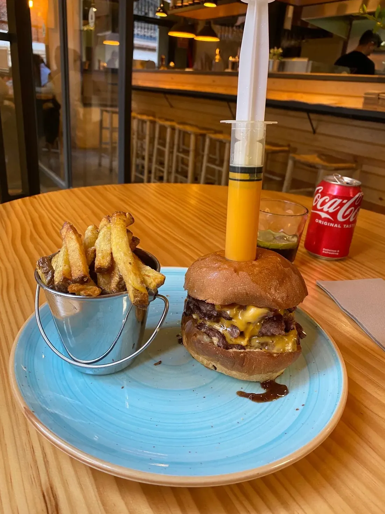
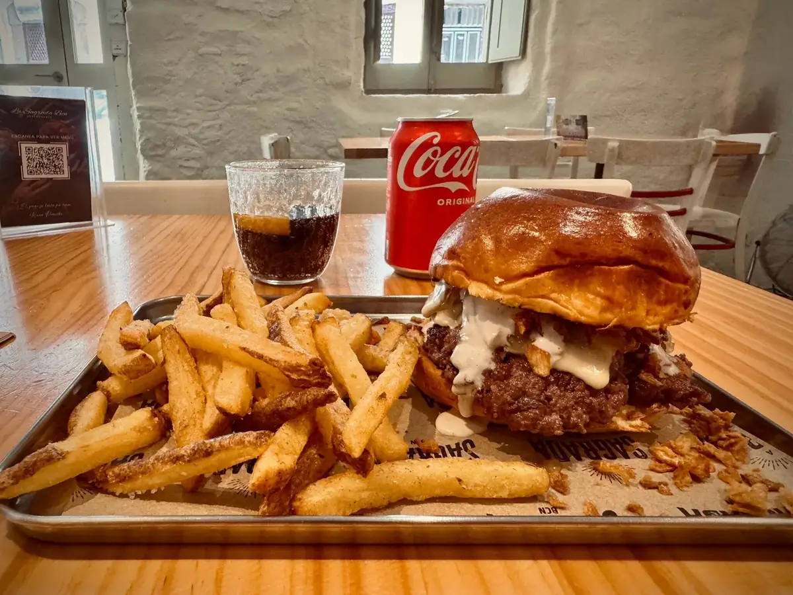

01
Pat Cox
★ BC Burger Cup 2023Doble carne, cheddar curado, panceta crujiente, cebolla caramelizada y salsa de la casa. La que ganó la copa de Barcelona. Pedirla sin pensarlo.
Hamburguesas gourmet trabajadas a fuego de piedra volcánica en pleno corazón de la Barceloneta. La Pat Cox ganó el BC Burger Cup 2023; la Bacon Cheese, el premio de mejor del 2024. Brioche fresco, carne madurada, tequeños de cilantro.

★ 4,6 — RestaurantGuru
No se hacen al hierro. La piedra volcánica trabaja a más de 400 °C, sella la carne en segundos y la deja jugosa por dentro sin perder un gramo de jugo. Así nace cada burger en la Barceloneta.
Pan recibido cada mañana del obrador. Tostado solo por dentro, justo antes de montar.
Mezcla de cortes nobles, picada el día. Se forma a mano, sin prensar. Reposa hasta el pedido.
400 °C de calor seco. Sellado en 90 segundos por lado. Caramelización Maillard sin perder jugo.
Montaje exprés y a mesa. Tequeños de maíz con salsa de cilantro como compañeros.
Carta corta, ningún hueco de relleno. Tres burgers que cuentan La Sagrada: la premiada Pat Cox, la viral Bacon Cheese y la fundacional con su nombre.
Doble carne, cheddar curado, panceta crujiente, cebolla caramelizada y salsa de la casa. La que ganó la copa de Barcelona. Pedirla sin pensarlo.
Smash sobre piedra volcánica, doble cheddar, bacon de Asturias, pepinillo y salsa Sagrada. Sin florituras. Premiada por el ranking 2024.
La que da nombre al sitio. Carne madurada, queso fundido, tomate confitado y un toque ahumado. El clásico que abrió las puertas en 2021.
Tequeños de maíz con salsa de cilantro y jalapeño · Bravas de la casa con dos salsas · Cervezas artesanas locales · Limonadas caseras de cítricos.
Fotos reales del último mes. Plato cerámico, patatas en cubo, ese golpe de cilantro en las bravas y la jeringuilla con extra de salsa. Sí, es el código de la casa.
Empezamos con una piedra volcánica, dos burgers y un local de cinco mesas en la calle Sant Carles. Tres años después, dos premios después, lo único que sigue intacto es la piedra.
Esto era una demo
Esta web era una muestra de lo que podríamos hacer para La Sagrada. Si te ha gustado y quieres una para tu negocio, escríbenos — Pedro te responde personalmente y la web final la adaptamos al 100% a tu gusto.
Pedro Núñez · Impacto Digital